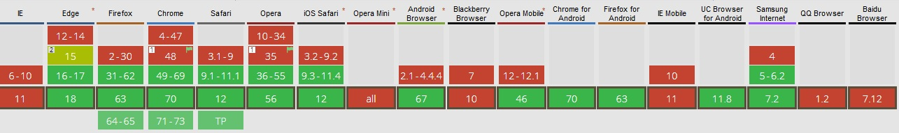

	<!-- ===================== Route ================== -->
	<script src="../xFiles/js/route_intermediary.js"> </script>
	<!-- ============================================== -->

	<article>

		<div class="article-title"> Snippets : CSS Variables - fallback syntax </div>

		<div class="col-12">

			<p> At the time of posting (nov 2018), the global support for CSS Variables is <b-r>87.63%</b-r>. </p>
			<p class="sub-heading mt-0"> As ussual, the haters are <b>IE</b> and <b>Opera Mini</b>, while all other Major Browsers offer full support. </p>

			<div class="col-12 p-0 xs-hidden sm-hidden">
				<hr>
				
				<hr>
			</div>

			<div class="col-12 p-0 md-flex md-flex-cross-center">

				<div class="col-12 md-col-6 p-0"> 
					<p> CSS variables are awesome for many reasons, but the main ones are: </p>
					<hr>
					<p> <b>1. It makes code more maintainable</b> </p>
					<p class="sub-heading mt-0"> * We need to change the value in one place (the var declaration itself) </p>
					<p class="sub-heading mt-0"> * and it is updated everywhere (where the var is refferenced). 
					<p> <b>2. It can be changed dynamically</b> </p>
					<p class="sub-heading mt-0"> * We can change the value while the website/app is running, and the values will still be updated everywhere. </p>
				</div>

				<div class="col-12 md-col-6">
					<div class="wrapper">
						<pre class="pre-removeTabSpaces">
						    :root {
						        <b-p>--myColor</b-p> : #FFFFFF; <i class="comment"> /* If we change the value here */ </i>
						    }

						    .myElement {
						        color: var(<b-p>--myColor</b-p>); <i class="comment"> /* It will be updated here */ </i>
						    }

						    .myOtherElement {
						        border-color: var(<b-p>--myColor</b-p>); <i class="comment"> /* And here also */ </i>
						    }
						</pre>
					</div>
				</div>
			</div>

			<div class="col-12 p-0 md-flex md-flex-cross-center">

				<div class="col-12 md-col-6 p-0"> 
					<p> <b>If trying to offer full-support</b>, the fallback syntax <b>nullifies</b> both of these features. </p>
					<p class="sub-heading mt-0"> * The values must be changed in <b-r>two extra places</b-r>, for each declaration. </p>
					<p class="sub-heading mt-0"> * The value must be <b-r>changed manually</b-r>, when the website/app is running. </p>

					<p> This is why, <b>the fallback syntax</b> <b-r>does not offer full-support for all browsers.</b-r> </p>
					<p class="mt-0"> <b-r>*</b-r> <b>It only provides</b> <b-r>a baseline value</b-r> <b>to</b> <b-r>greacefully-degrade-to.</b-r> </p>
				</div>

				<div class="col-12 md-col-6"> 
					<div class="wrapper">
						<pre class="pre-removeTabSpaces">
						    :root {
						        <b-p>--myColor</b-p> : <b-r>#FFFFFF</b-r>;
						    }

						    .myElement {
						        color: <b-r>#FFFFFF</b-r>; <i class="comment">// fallback if the browser doesnt support CSS Variables</i>
						        color: var(<b-p>--myColor</b-p>, <b-r>#FFFFFF</b-r>); <i class="comment">// fallback if the variable itself is [not set] or has an [invalid value]</i>
						    }

						    .myOtherElement {
						        border-color: <b-r>#FFFFFF</b-r>; <i class="comment">// fallback if the browser doesnt support CSS Variables</i>
						        border-color: var(<b-p>--myColor</b-p>, <b-r>#FFFFFF</b-r>); <i class="comment">// fallback if the variable itself is [not set] or has an [invalid value]</i>
						    }
						</pre>
					</div>
				</div>
			</div>

			<hr>

			<row class="flex flex-cross-center p-0">
				<div class="col-12 md-col-6 p-0">
					<p> <b>Fallback 1 - CSS Variables NOT Supported in browser</b> </p>
					<p class="mb-0"> First we declare a default value, the 'normal' way. </p>
					<p> Second, we set the value as the CSS variable. </p>
				</div>
				<div class="col-12 md-col-6 p-0">
					<div class="wrapper">
						<line> .myElement { </line>
							<indent>
							<line> color: #FFFFFF; </line>
							<line> color: var(--myVariable); </line>
							</indent>
						<line> } </line>
					</div>
				</div>
			</row>

			<hr>

			<div class="col-6 p-0">
				<p> <b>If CSS Variables are supported :</b> </p>
				<p class="mt-0"> <b>*</b> the 1st value will be valid - will be applied </p>
				<p class="mt-0"> <b>*</b> the 2nd value will be valid - will be applied </p> 
				<p class="mt-0"> <b>></b> So the 2nd value will take effect, due to the cascade. </p>
			</div>

			<div class="col-6 p-0">
				<p> <b>If CSS Variables are NOT supported :</b> </p>
				<p class="mt-0"> <b>*</b> the 1st value will be valid - will be applied </p>
				<p class="mt-0"> <b>*</b> the 2nd value will not be valid - will not be applied </p>
				<p class="mt-0"> <b>></b> So the 1st value will take effect, as the 2nd value is invalid. </p>
			</div>

			<hr>

			<row class="flex flex-cross-center p-0">
				<div class="col-12 md-col-6 p-0">
					<p> <b>Fallback 2 - The variable is not set or invalid </b> </p>
					<p class="mb-0"> CSS variables and values can be chained - like <span class="wrapper">font-family</span> </p>
					<p class="mb-0"> First we declare the value as the CSS variable </p>
					<p class="mb-0"> Second we declare the value as a fallback value </p>
				</div>
				<div class="col-12 md-col-6 p-0">
					<div class="wrapper">
						<line> .myElement { </line>
							<indent>
							<line> color: #FFFFFF; </line>
							<line> color: var(--myVariable); </line>
							</indent>
						<line> } </line>
					</div>
				</div>
			</row>

			

			<p> If the CSS variable doesn't have a value set (thus, it's invalid), or if the value in invalid for the property itself, it will be skipped, and the second value will be applied. </p>

		</div>

	</article>